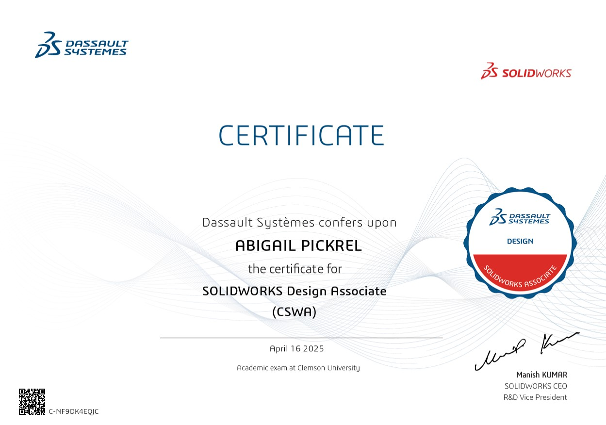
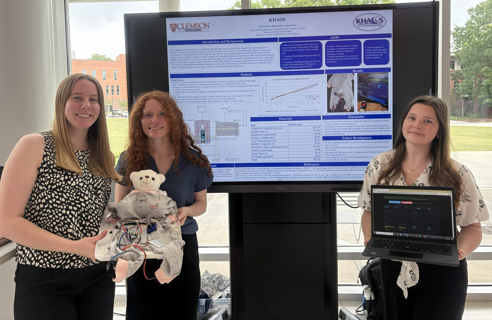
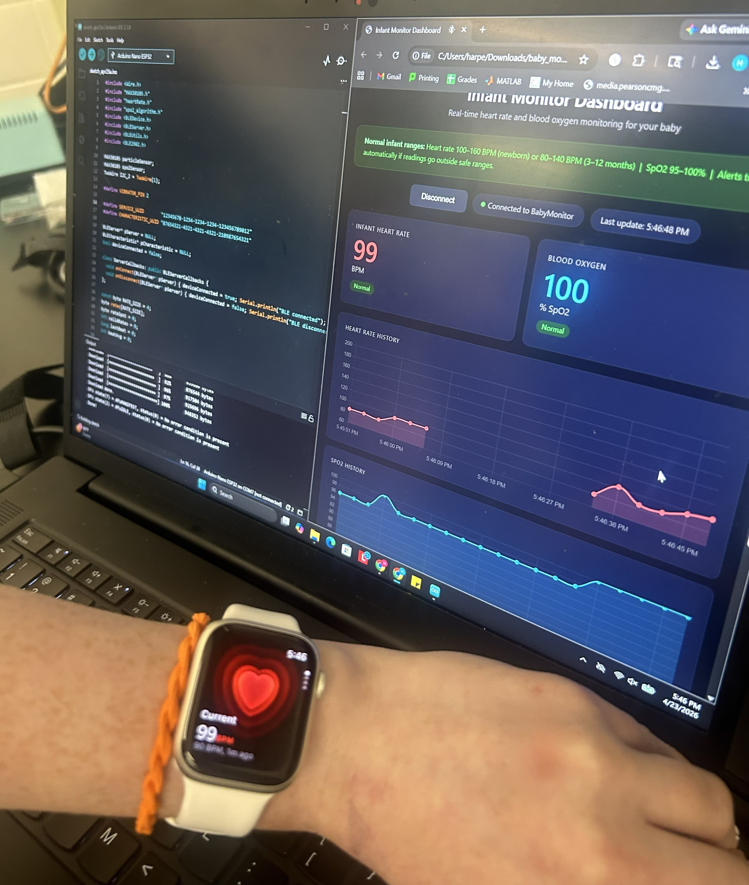
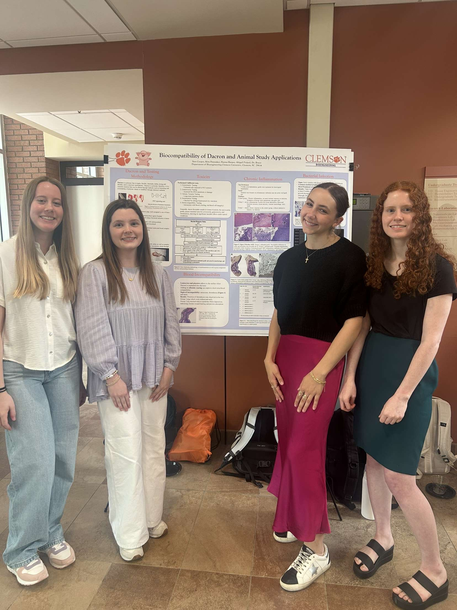

Through learning skills pertaining to computer science, engineering, and design, I believe I have developed a skillset that will allow me to be an impactful researcher.

SolidWorks Certification (issued in 2025)
Python - I learned Python in high school through an AP Computer Science Principles course where I was challenged to create a short story presentation that I presented to my class and my final project was an application that allowed users to add filters to images.
MATLAB - In the spring of 2024, I took Programming and Problem Solving, which was a course focused on MATLAB and we applied our knowledge of MATLAB to physical devices, such creating a light that is operated by a switch as well as creating programs that generate graphs when provided user input. I have since served as an undergraduate teaching assistant for this course, which allowed me to refine my MATLAB skills and help first-year students in their understanding.
HTML - Through using free learning resources online, I have developed my knowledge of HTML and used the coding language to create this completely custom website.
Arduino - I have had the opportunity to learn how to code using arduino applications through the bioinstrumentation course as well as personal projects.
G-Code - Through using a 3D printer to automate a biosensor fabrication protocol and through work in the makerspace on campus, I have become familiar with G-Code
Mimo - Mobile coding application to become familiarized with Python, JavaScript, SQL, CSS, HTML (began summer 2026)
FreeCodeCamp - Site that allows users to work on skills that are useful for software development (since summer 2025)


Through this bioinstrumentation project, I had the opportunity to identify a need, design a product, and build and code the product in five weeks with two peers, Kira Dannaker and Hanna Harper. Without any prior knowledge in Arduino, we used tools such as Claude to guide our learning and we were able to use that to create an infant sleep apnea overnight sensing monitor that shows blood oxygen, heart rate, breathing rate, and sleeping position.

In our biomaterials course in spring of 2025, my teammates and I had the opportunity to do a literature review project where we explored studies on the applications of Dacron, familiarizing ourselves with its properties. The purpose of this project was to determine if the material would be acceptable for a cardiovascular implant after our class was able to conduct heart dissections. This course allowed me to develop a stronger appreciation for materials science and a more developed understanding of its importance in biomedical engineering applications.
This summer, after completing the bioinstrumentation course, I realized my interest in bioelectrical projects as well as my enjoyment from hands-on building, wiring, and coding. Therefore, I consulted my mentor, Dr. Dean, and she recommended that I build some sort of robot that can complete a single task. Therefore, I designed, 3D printed, coded, and built a programmable drop dispense robot that can be used for automation purposes, such as in biosensor fabrication protocols with antibody immobilization. I was able to complete this entire project without a budget, using only materials that were free for students from the makerspace (such as filament) and parts from scrapped bioinstrumentation projects (screws, rods, arduino, breadboard, motor, and motor driver). This was intentional as one of the challenges of this project was to exercise my resourcefulness and design solutions whereas the alternative or faster solution may have been to order a new part. I was able to complete this project in less than six weeks while conducting research through Summer CI.